GIS · Remote Sensing · Environmental Intelligence
Marcelo Guzmán
Biologist & GIS specialist translating complex geospatial and ecological signals into clear, actionable environmental intelligence — from urban biodiversity to renewable energy compliance.
A single-page atlas of fieldwork, models, and instruments.
About
Calm, considered, and grounded in evidence — a practice at the intersection of geospatial analysis, ecology, and environmental policy.
I am a biologist working at the intersection of geospatial analysis, ecology, and environmental policy — turning raw spatial and ecological data into insight that supports sustainable decisions.
My work spans environmental impact assessments, urban biodiversity research, renewable energy projects, and restoration monitoring. Whether modeling, monitoring, or designing workflows, I keep decisions current with real-time geospatial signals — quietly, precisely, and at scale.
Drag · scroll · ← →
Atlas
Global Portfolio Explorer
Every project geographically located. Featured work uses a warm spectral pin.
Featured
Project
Video résumé
A short, narrated walk through the practice, the tools, and the way I think about measuring environments.
Technical skills
Three concentric domains — spatial measurement, computational analysis, and field ecology — that compound into a single environmental practice.
Computational fluency
Ecological practice
Featured projects
Five long-form case studies — exchange research, urban ecology, GIS modeling, UAV accuracy, and a long-running urban-river atlas.
Selected GIS & environmental projects
A curated set where geospatial analysis, ecology, and fieldwork converge — supporting conservation, urban planning, and environmental compliance.
Explore
Select a project to reveal its case card with media.
Drone Photogrammetry for Environmental Compensation
Designed and managed the firm's first drone-based photogrammetry analyses to monitor forest cover, soil recovery, and ecological restoration in environmental compensation projects.
- Captured and processed UAV imagery to generate DSMs and orthomosaics for site assessments.
- ArcGIS Pro ModelBuilder workflows with Python and R integrations for real-time updates.
- QA/QC of spatial datasets aligned with regulatory standards.
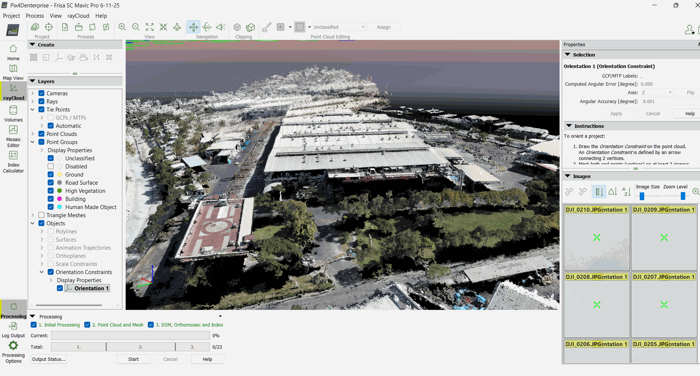
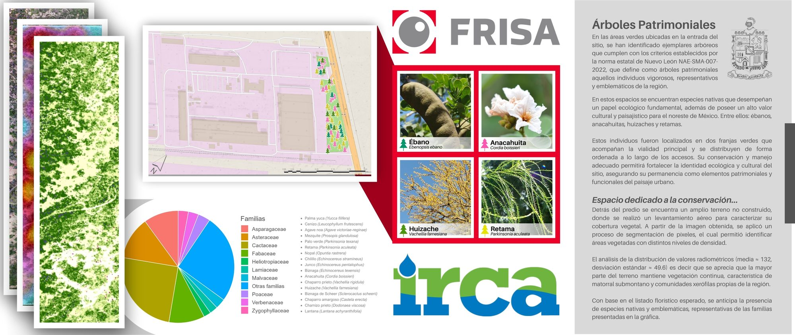
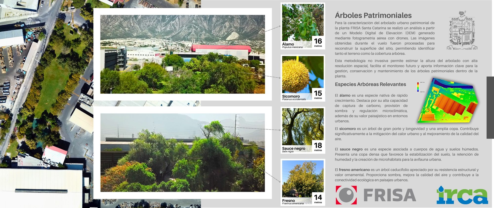
Riparian Forests & Urban Bird Diversity
Used multispectral remote sensing and land-cover data to quantify how riparian forests along an urban river influence bird diversity and community structure.
Invited by Info7 News to participate as an expert on Río Santa Catarina, and presented results at the panel "DATATÓN" hosted by government and academic institutions on holistic basin management.
- Mapped vegetation structure and coverage along riparian corridors.
- Integrated point-count bird surveys with spatial layers to model biodiversity responses.
- Findings supported post-storm planning after tropical storm Alberto.
↗ Watch the Info7/Info7 segment on @unrioenelrio
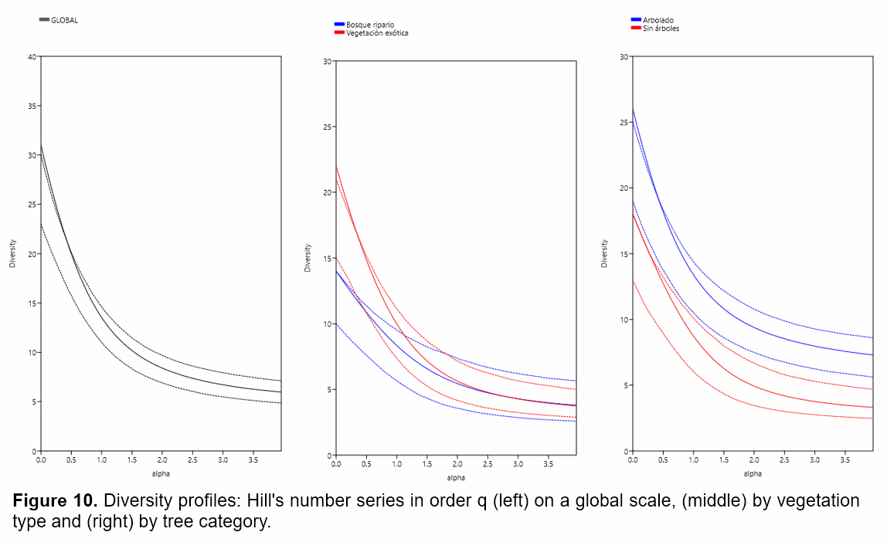

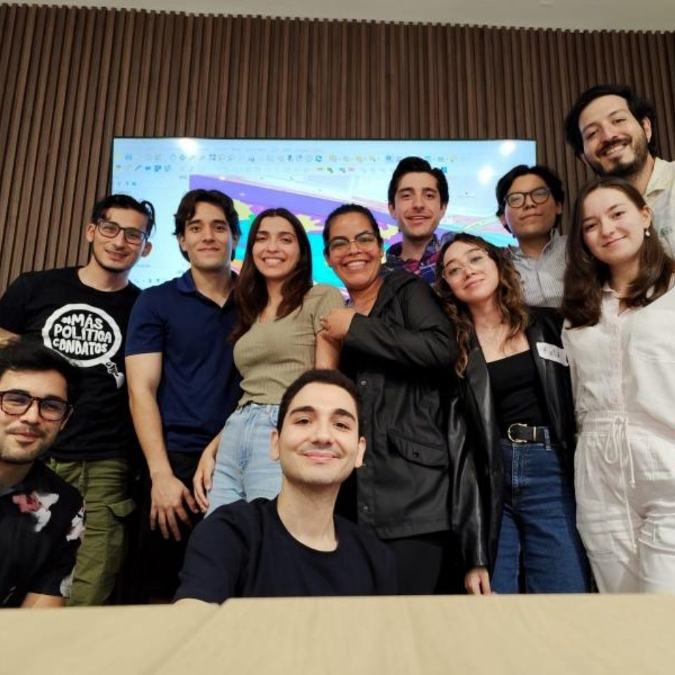
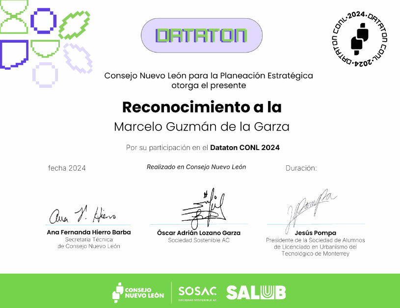
Historical Vegetation & Water-Surface Analysis
Conducted multispectral remote sensing using NDVI and NWI to analyze historical vegetation and water bodies for a housing-development area.
- Built temporal NDVI / NWI maps to identify sensitive ecological areas.
- Combined land surveys, species observations, and water-quality data with GIS outputs.
- Delivered actionable recommendations to minimize ecological impact and guide planning.
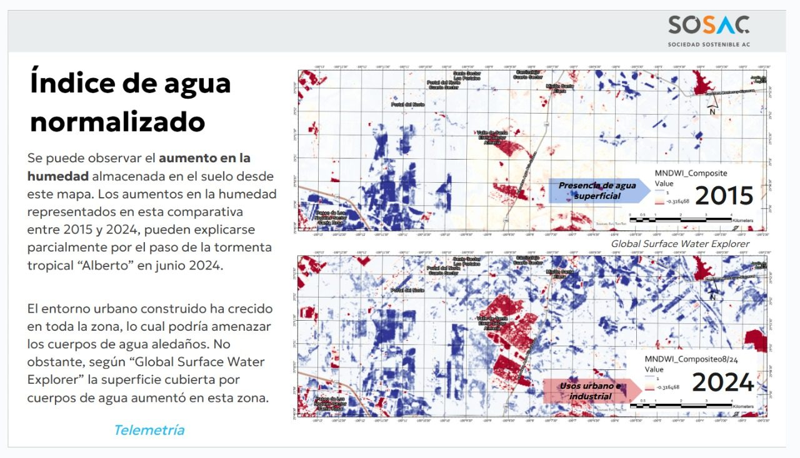
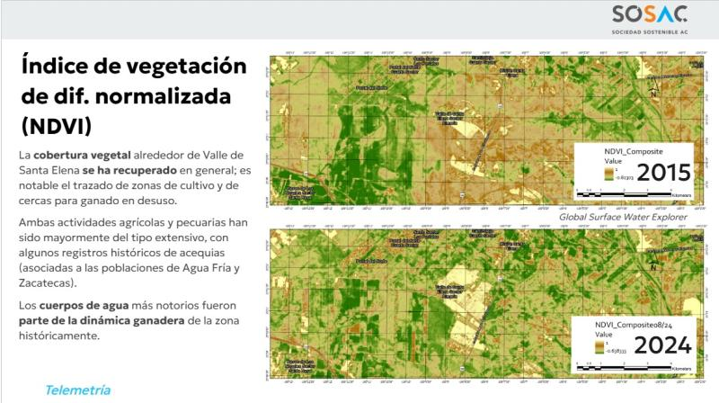
Remote Sensing for Reforestation Monitoring
As Environmental Data Analyst and Surveyor for wind farms at ENEL, I gathered and analyzed pre- and post-construction data to deliver environmental assessments. I automated — for the first time in the lab — the transformation of raw field metadata (largely camera trapping) into structured species-composition databases using R-based tools. I supported field research monitoring two sensitive species (lynx and Texas tortoise) and large mammals — particularly Nilgai, an Asian antelope introduced for hunting in northeast Mexico and Texas — and assisted in the GIS evaluation of reforestation efforts.
- Tracked vegetation cover changes through time with geospatial tools and satellite imagery.
- Automated environmental metadata pipelines in R — five days of processing reduced to one.
- Combined spatial data with field observations of large mammals and endangered species distributions.
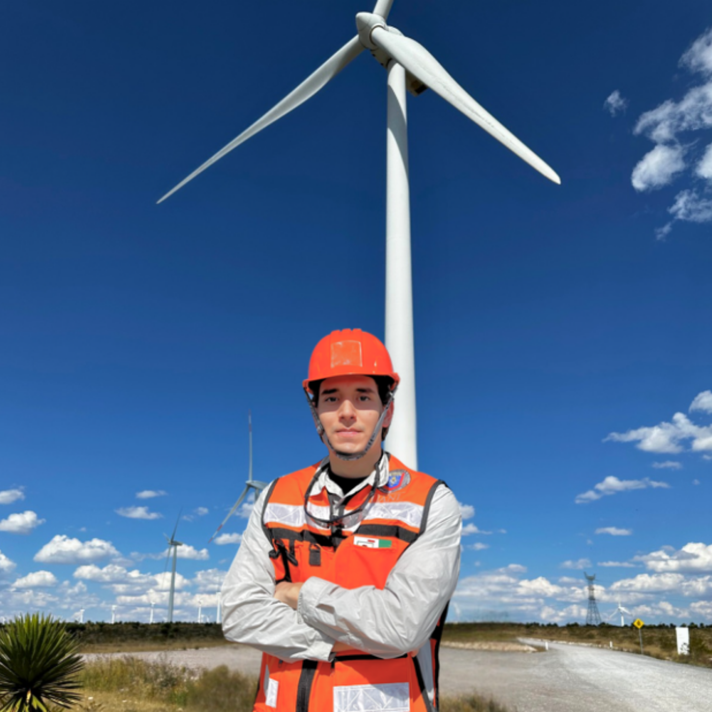
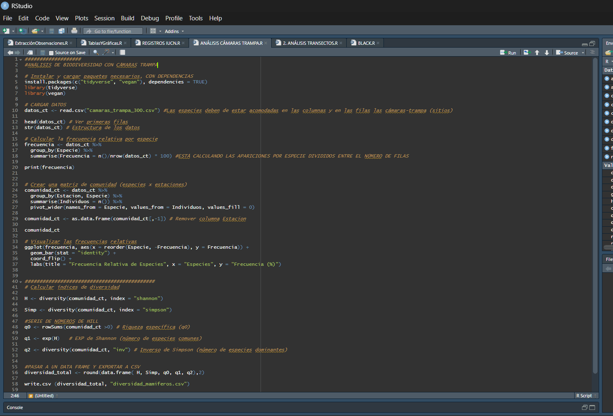
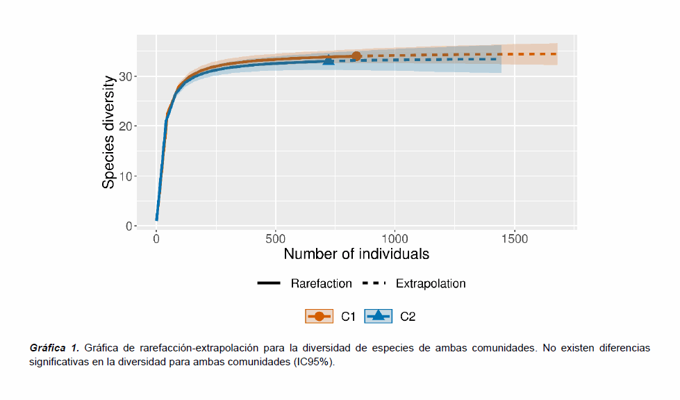
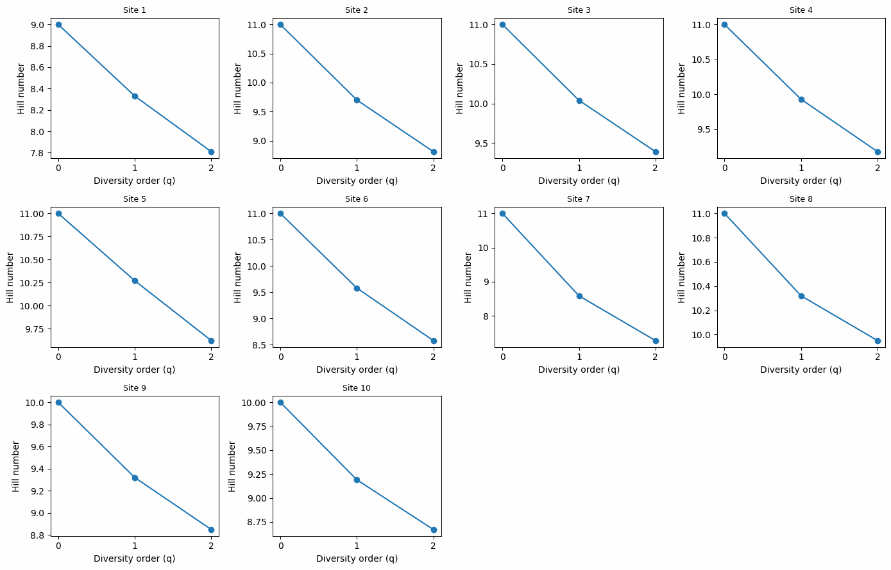
Urban Park Biodiversity Monitoring Framework
Standardized biodiversity surveys across nine urban parks and proposed new statistical indicators to track ecological health in urban green spaces.
- Harmonized survey protocols for cross-park comparability.
- Worked with park layout and habitat-structure spatial data to interpret biodiversity patterns.
- Supported indicator design aligned with SDG 11 and urban-sustainability goals.
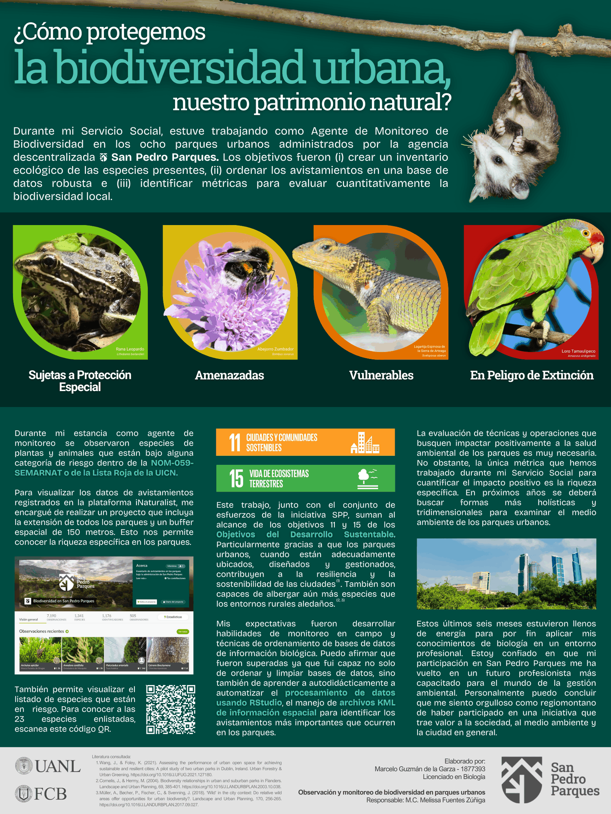
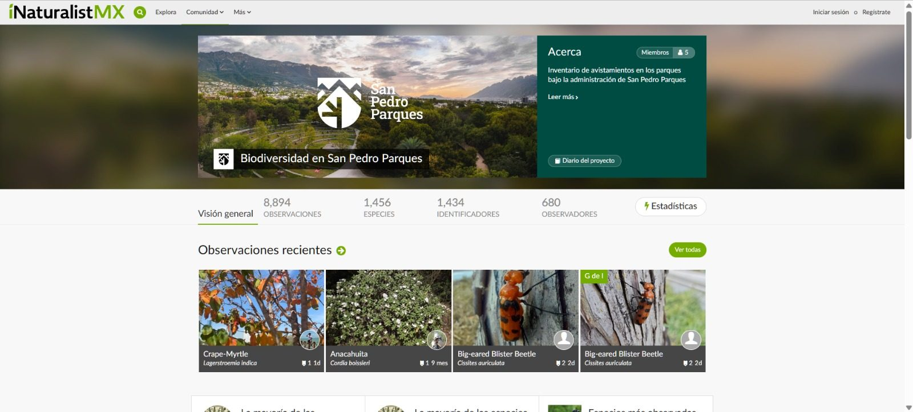
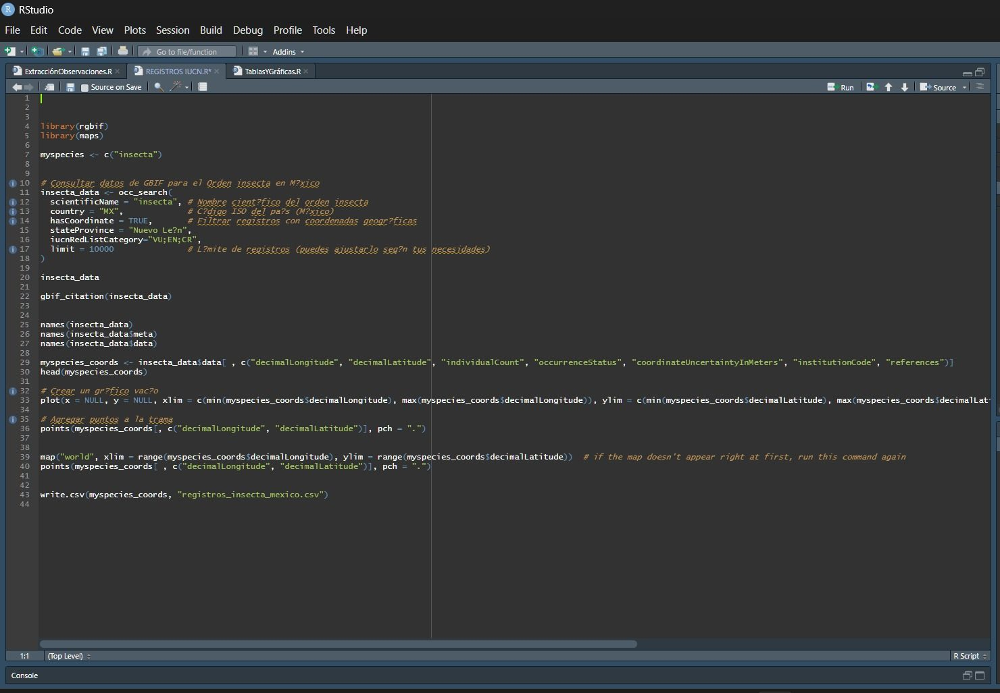
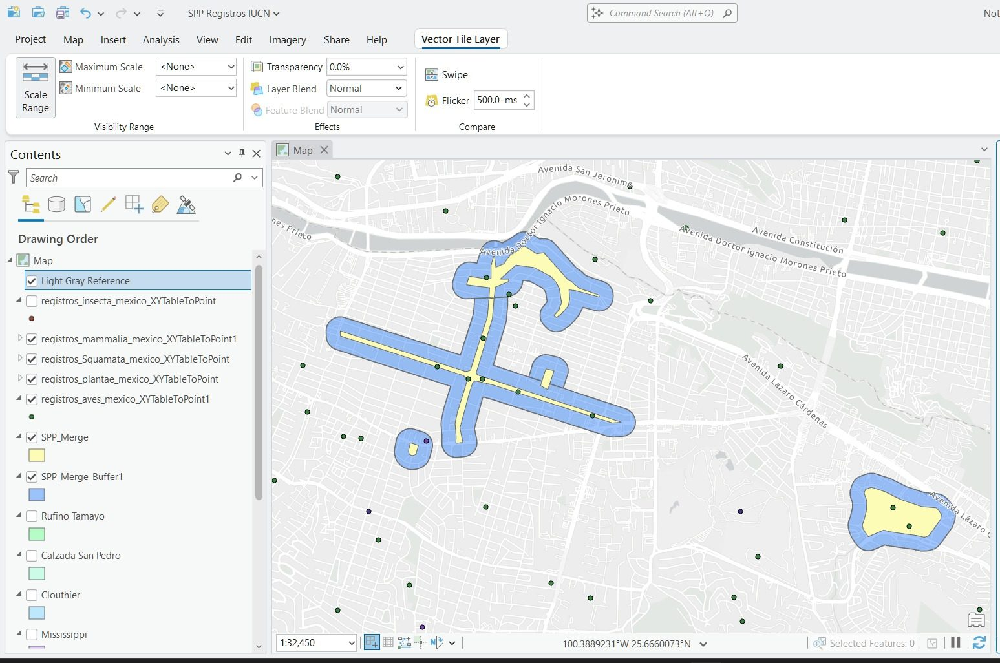
References
Mentors, supervisors, and collaborators who can speak to my work in the field and at the desk.
M.Sc. Iván González
PhD Candidate & Researcher
Mentor and supervisor for my avian-research volunteering at the University of Debrecen.
- 📞 +36 70 675 1099
- ✉️ ivangonzalezandazola@gmail.com
M.Sc. Adrián Lozano
Socioecosystems & Sustainability Strategist
Supervisor for "Environmental Surveyor & Researcher".
- 📞 +52 1 81 1328 3169
- ✉️ adrian.lozano@sosac.org
Dr. Antonio Guzmán Velasco
Professor · Head of Conservation Biology & Sustainable Development
President of the Climate Change Technical Council of Nuevo León; member of the Intersecretarial Commission on Climate Change; advisor to the Geological & Hydrometeorological Technical Council.
Manager for "Environmental Data Analyst, Database Curator, and Surveyor".
Excerpts
Recommendation letters
A curated deck of excerpts gathered over the years. Drag horizontally to read.
Marcelo is a young leader with initiative, a strong set of technical skills, and a deep commitment to climate action. Considering his academic track record and personal conduct, I can confidently state that Marcelo Guzmán de la Garza is an excellent candidate. I strongly recommend him.
Dr. Antonio Guzmán Velasco · Professor & Researcher
For the course's final project, Marcelo led the development of a proposal for ecological restoration and agroforestry management. His leadership in conducting an extensive analysis of the restoration site — including physiographic, climatic, soil, and ecological aspects — was distinguishable. His adept use of GIS tools to create maps and process satellite imagery surpassed the standard set by his peers.
Dr. María Magdalena Salinas Rodríguez · Herbarium Curator, SNI Level I, UANL
Marcelo's academic excellence is matched by his practical contributions. He has consistently exceeded expectations in laboratory and fieldwork.
Dr. Edgar Cruz Acevedo · Professor & Researcher, SNI Level I, UANL
Professional experience
A continuous arc through compliance, research, renewable energy, and urban ecology.
Sep 2025 — Present
Project Manager · IRCA Consultants
Leading environmental compliance and geospatial workflows for impact assessments and compensation projects.
- Scoped and managed environmental compliance projects and permitting consultations.
- Implemented drone photogrammetry and GIS workflows for forest and soil recovery monitoring.
- Maintained GIS databases with QA/QC aligned to regulatory and client standards.
Feb 2025 — Sep 2025
Research Intern & GIS Analyst · Institute of Biology and Ecology, University of Debrecen
Integrated geospatial analysis into avian urbanization research in Europe.
- Enhanced Urbanization Index analytics for blackbird populations with GIS metrics.
- Standardized bird sampling protocols including mist netting, banding, and biometrics.
Jun 2024 — Feb 2025
Ecological Data Analyst & Surveyor · Enel Green Power
Supported renewable-energy projects with ecological surveys and geospatial data pipelines.
- Automated environmental data processing in R (500% efficiency gain).
- Contributed geospatial analyses for reforestation and biodiversity monitoring.
Nov 2024 — Dec 2024
GIS Technician & Surveyor · Javer Housing Developer
Delivered GIS-based insights for sustainable housing development.
- NDVI / NWI maps for historical vegetation and water-surface analysis.
- Integrated resident interviews and field data with spatial analysis to inform planning.
Jan 2024 — Nov 2024
Researcher & GIS Analyst · Lab of Conservation Biology & Sustainable Development, UANL
Quantified the role of riparian forests in maintaining urban bird diversity.
- Multispectral imagery and land-cover data for riparian-forest mapping.
- Engaged local communities around conservation initiatives and urban habitat preservation.
Jun 2024 — Dec 2024
Biodiversity Monitoring Intern · San Pedro + Parques
Supported biodiversity monitoring and metric design across nine urban parks.
Education & training
Two universities, two continents, one continuing curriculum in geoinformatics, ecology, and policy.
University of Debrecen
Stipendium Hungaricum Scholar — semester abroad focused on geoinformatics, remote sensing, and environmental policy.
- Hyperspectral Remote Sensing
- Remote Sensing with UAVs
- Models in GIS
- Environmental Policy & Communication
Universidad Autónoma de Nuevo León
Honors Program student with strong training in ecology, conservation biology, and quantitative analysis.
- Excellence and social-service awards for SDG-aligned sustainability projects (among 450).
- National Bachelor's Examination · Outstanding Performance Certificate (CENEVAL).
- Academic Excellence Scholarship (full tuition) for sustained high performance.
- Honors Program for High-Performing Undergraduates.
- International Academic Mobility Scholarship for studying abroad in Europe.
Additional qualifications
Continuing education and language credentials.
- R for Data Science (Cognitive Class)
- J-1 Exchange Visitor Program (BridgeUSA)
- French DELF B2 & immersion program in Canada
Awards & honors
A distillation of academic, scholarship, and service recognitions — the receipts behind the practice.
National Academic Excellence Award in Biology (EGEL), Mexico
National academic distinction awarded for exceptional performance on Mexico’s EGEL bachelor’s exit examination; CENEVAL reports that 2.9% of 2,536,065 test takers have received the award, recognizing graduates for effort, dedication, integrity, and social commitment.
National Bachelor's Examination · Outstanding Performance
Highest performance level on the CENEVAL national assessment, issued by the National Center for the Evaluation of Higher Education.
Stipendium Hungaricum Scholarship · Hungarian Government
Full coverage and monthly stipend for selected Geoinformatics & Environmental Science master's coursework in Europe.
International Academic Mobility Scholarship · UANL
Awarded on academic merit; covered travel and provided a monthly stipend for studies abroad in Europe.
Academic Excellence Scholarship · Full Tuition
Awarded across consecutive terms for sustained, top-decile academic performance.
Honors Program · High-Performing Undergraduates
Second- and third-highest academic ranking across the entire Biology cohort.
Excellence in Social Service · SDG 11
Recognized among 450 projects in the Sustainability category for advancing Sustainable Development Goal 11.
Files
Supporting documents & certificates
Preview or download official certifications and acceptance letters.
- CENEVAL Academic Excellence Award · National Bachelor's Exit Exam Official record for Mexico’s national academic-excellence award, searchable in CENEVAL’s recognition portal. Preview Download
- CENEVAL · Outstanding Performance Certificate National examination certificate recognizing top performance. Preview Download
- Academic Excellence Scholarship · Letter of Award Confirmation of the full-tuition academic-excellence recognition. Preview Download
- Excellence in Social Service · Sustainability Recognition Recognition letter honoring contributions to sustainability initiatives. Preview Download
- Academic Transfer · Apostille Apostilled transfer document validating international credentials. Preview Download
- BridgeUSA · TWP Certificate Two months of practical training in zoology / animal biology with Tanganyika Wildlife Park, Goddard, KS. Preview Download
- DELF B2 Diploma French language proficiency at B2 level — reading, writing, listening, speaking. Preview Download
- UniDeb · Internship Completion Letter Confirms research volunteering on a European blackbird urbanization project (data collection, netting, banding, biometrics). Preview Download
- UniDeb · Partial Letter of Acceptance Acceptance documentation for a non-medical program in Debrecen. Preview Download
Get in touch
Let's measure something together.
I'm open to collaborations on environmental assessments, GIS analysis, remote-sensing projects, and conservation research.
Full portfolio
The complete catalog of geospatial and environmental projects, filterable by domain.